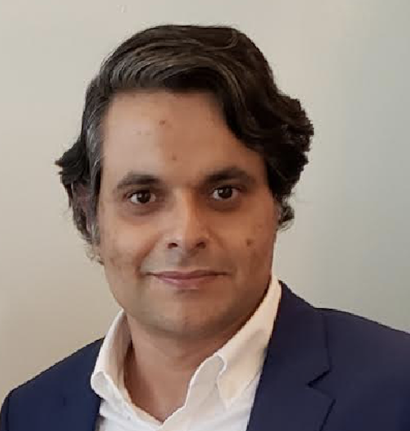

 |
● MEDICAL DEVICES Yelp M., S., Alaie., E. Romito ,T. Doshi, A. A.i Amiri Moghadam, B. Mosadegh, S.n Dunham, Low-Cost and Rapid Shaping of Nitinol for Medical Device Prototyping. ASME Journal of Open Engineering, 2023. Alaie, S., S. S. Robinson, A. A.i Amiri Moghadam, J. Augé, A. Caprio, K. Kolli, S. J. Al'Aref, J. Min, B. Mosadegh, S.n Dunham, Advanced Manufacturing of Patient‐Specific Occluders for the Left Atrial Appendage with Minimally Invasive Delivery. Advanced Engineering Materials, 2020. Robinson, S. S,, S. Alaie , H. Sidoti, J. Auge, L. Baskaran, K. Avilés-Fernández , S. D. Hollenberg, R. F. Shepherd , J. K. Min1, S. N. Dunham, and B. Mosadegh , Patient-specific Design of a Soft Occluder for the Left atrial AppendageNature Biomedical Engineering, 2018. 2: p. 8-16.
Alaie, S., D.F. Goettler, C.M. Reinke, M.F. Su, Z.C. Leseman, and El-Kady. I., Thermal Transport in Pononic Crystals and the Observation of Coherent Phonon Scattering at Room Temperature.Nature Communications, 2015. 6: p. 7228. Alaie, S., M.F. Su, D.F. Goettler, I. El-Kady, and Z. Leseman, Effects of Flexural and Extensional Excitation Modes on the Transmission Spectrum of Phononic Crystals Operating at Gigahertz Frequencies. Journal of Applied Physics, 2013. 113(10): p. 103513.
Alaie, S., Sanlin S. Robinson, A. A. Amiri Moghadam, J. Auge, A. Datye, H. Sidoti, T. Doshi, S. Hassanzadeh Gharaie, J. K. Min, B. Mosadegh, and S. Dunham, Micropatterning of Nonplanar Surfaces on 3D Devices Using Conformal Template Vacuum Bagging. Advanced Materials Technologies, 2018, 1700353. miri Moghadam, A. A., S. Alaie, S. Nath, M. Aghasizadeh, J. Min, S. Dunham, and B. Mosadegh, Laser Cutting as a Rapid Fabrication Method for Thin Soft Pneumatic Actuators.Advanced Functional Materials, 2018, p. 1804147.
Alaie, S., M. G. Baboly, Y.-B. Jiang, S. Rempe, D. H. Anjum, S. Chaieb, B. F. Donovan, A. Giri, C. J. Szwejkowski, J. T. Gaskins, M. M. M. Elahi, D. F. Goettler, J. Braun, P. E. Hopkins, and Z. C. Leseman, Reduction and Increase in Thermal Conductivity of Si Irradiated with Ga+ via Focused Ion Beam,ACS Applied Materials & Interfaces, 2018. Amiri Moghadam, A. A., A. Caprio, S. Alaie, J. K. Min, S. Dunham, B. Mosadegh, Rapid Manufacturing of Thin Soft Pneumatic Actuators and Robots, Journal of Microelectromechanical Systems, 2016. 99: p. 1-9. Complete List of Publications(google scholar) |
| Seyedhamidreza Alaie Assistant Professor Phone: 575-646-2805 e-mail: alaie@nmsu.edu |
| ME & Aero Home | Contact the webmaster |